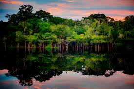
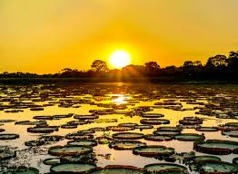
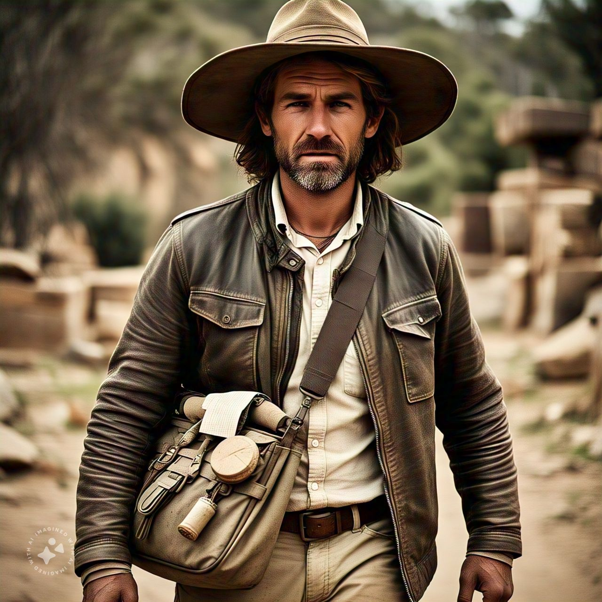
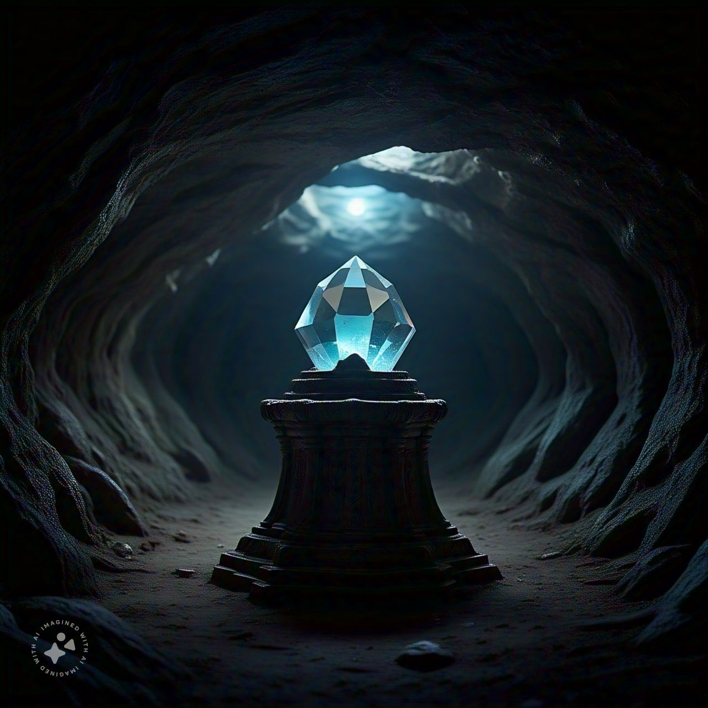

Você é um arqueólogo destemido em busca de um artefato perdido. Sua jornada começa no Brasil, onde você
deve decidir seu primeiro destino. Onde você irá primeiro?

Você decidiu explorar a Amazônia.

Você escolheu explorar o Pantanal.
Você encontrou o templo na Amazônia. Dentro do templo, você descobre um mapa que sugere que o próximo destino é o Deserto do Atacama, onde mais segredos aguardam.

Você desistiu e voltou para casa. Fim da jornada.
Você descobriu algo sobre a vida selvagem. As pistas sugerem que o próximo destino é o Deserto do Atacama.
Você decidiu explorar as áreas alagadas do Pantanal.
Você está no Deserto do Atacama, enfrentando os desafios do deserto.
Você voltou para investigar a vida selvagem.
Você escolheu seguir as dunas à esquerda.
Você seguiu as dunas à direita.

Você encontrou a caverna. Você explora a caverna e finalmente encontra o artefato perdido. Parabéns!
Você decidiu retornar e tentar o outro caminho. Após uma longa jornada, você finalmente encontra a caverna e o artefato perdido!